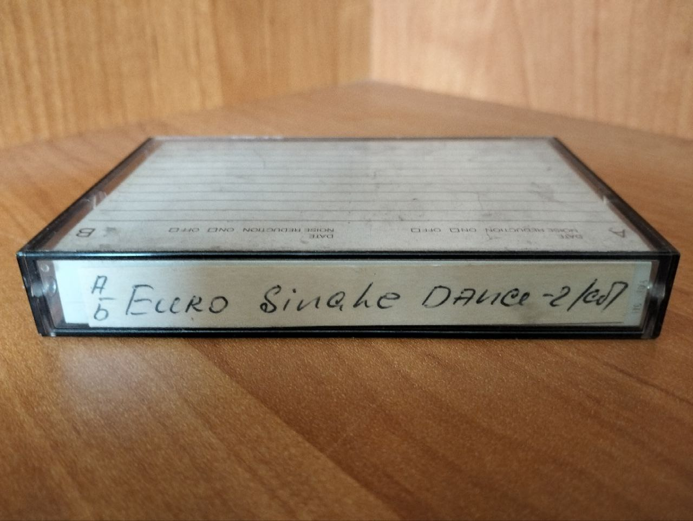
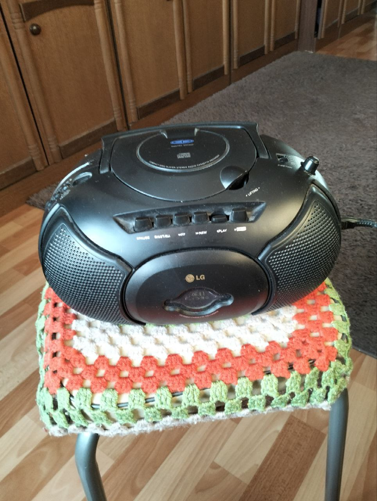

Euro single dance: кассета из 90-х
Во время уборки дома нашли с мамой кассету с подписью "Euro single dance", которую она купила в 90-х и включала во время автомобильного путешествия на Украину. Мама говорит, что раньше знала все песни вплоть до порядка, а сейчас уже и не каждую вспомнит, ведь последний раз включала кассету лет 17 назад.

Мы включили кассету и она оказалась очень кстати к зимнему солнечному дню. Слушали мы её на магнитофоне, который я выиграл (аж две штуки одинаковых) в детстве на каком-то конкурсе рисунков в честь открытия ТЦ "Премьер" в Тюмени. Не удивлюсь, если за меня рисовала мама!

Сегодня я нашёл все песни с кассеты в формате mp3 и скоро отправлю их маме. В том же порядке, что и на кассете. Вы тоже можете их послушать, я их оставил в своей группе в telegram.
Если не хочется подписываться, скажу, что из исполнителей там Phil Collins, Richard Marx, Eagles, Stevie Wonder, George Benson, Elton John, Chris De Burgh, Bryan Adams – в общем, лютая база.
Но вот мои любимые песни на этой кассете:
- Gazebo – I like Chopin
- Lionel Ritchie – Hello